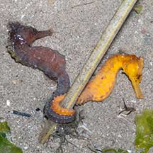
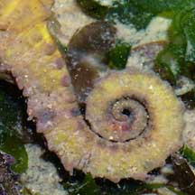
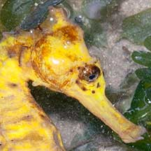
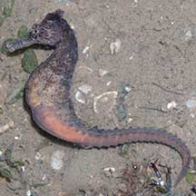
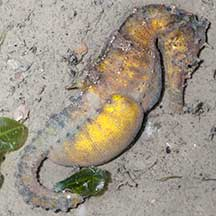
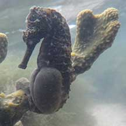

|
|
| fishes text index | photo index |
| Phylum Chordata > Subphylum Vertebrata > fishes > Family Syngnathidae |
| Seahorses Hippocampus sp. Family Syngnathidae updated Oct 2020
Where seen? Almost everyone knows what a seahorse looks like. An endearing, unfish-like fish, it truly captures the imagination. Seahorses are more common on our shores that most people might think. They are superbly camouflaged and thus often overlooked. Some may be as large as 11cm, but there are tiny ones too. What are seahorses? Seahorses are actually fishes! They belong to Family Syngnathidae which includes pipefishes. Features: To 30cm long, those seen about 5-12cm. The seahorse doesn't have scales like most other fishes. It is encased in an inflexible armour of overlapping bony plates that lie just beneath its skin. Like other fishes, it also has an internal skeleton. Adapted to calm waters with lots of hiding places, a seahorse cannot swim fast. Most of the time it swims extremely slowly or remains stationary. It relies on camouflage to hide from both predators and prey. It lacks a tail fin and pelvic fins. It has a small dorsal fin and tiny pectoral fins on its 'cheeks'. These fins are used to stabilise itself. It uses its flexible, muscular tail to hang on to vegetation and other supports. It can also change colours to match its surroundings. Some species have flaps and projections out of their body to match the vegetation around them. |
 Often seen in a pair. Tanah Merah, Aug 09 |
 Flexible tail used to hang onto objects. Changi, May 05 |
 Mobile eyes can move while the body remains still. Toothless jaws used like a straw. Changi, Jul 07 |
| What do they eat? It may be hard
to imagine of such seemingly harmless creatures, but seahorses are
voracious predators. They sit-and-wait in ambush to capture tiny animals
that drift or wander by. These shrimps, crabs and tiny crustaceans
are sucked up and swallowed whole. The jaws are tube-like ending in
a tiny toothless mouth. 'Syngnathus' means 'fused jaws' in Greek. A seahorse needs to eat a lot continuously because its digestive system is simple and it does not have a stomach. Even a baby seahorse can eat thousands of tiny shrimp in a day! The seahorse has highly mobile eyes that can move independently of one another to look out for predators and prey without moving its body. Like other predators, seahorses are often territorial, and seahorses in a seagrass meadow are often well spaced apart. Pregnant fathers: Seahorses reproduce in a peculiar way. It is male that carries the eggs in his body and thus becomes 'pregnant'. The female lays her eggs in his pouch using a tube that looks very much like a penis. Inside his pouch, the eggs are fertilized and become embedded into the body walls. The blood vessels in the pouch provide the eggs with oxygen and nutrients. The production of these nutrients is stimulated by prolactin, one of the hormones that affect pregnancy in mammals. Emerging from the eggs, the babies hatch as miniature seahorses and may remain in the pouch for a while before the father goes into 'labour' and ejects them out of the pouch. Once they leave his pouch, he does not look after them. In fact, his mate is often ready with another batch of eggs. So he is often constantly 'pregnant'! Some seahorses perform elaborate courtship dances, sometimes changing colours as they move and holding tails as they swim together. In the wild, some form mated pairs. |
 Pregnant papa Pasir Ris Park, Jul 08 |
 Very pregnant papa. Changi, May 11 |
 Very pregnant papa. Sisters Island, Mar 12 |
| Human (ab)uses: Seahorses are
used in traditional Chinese medicine. Many species are also caught
for the live aquarium trade or dried and sold as cheap curious and
souvenirs. See below for some of the issues surrounding the harvesting
of wild seahorses. Status and threats: Seahorses are listed as CITES II (which means their international trade is monitored) and are considered globally vulnerable. Hippocampus kuda is listed among the threatened animals of Singapore. Seahorses have few natural predators. Being virtually skin and bones, they don't make particularly good eating. Humans are the main threat to seahorses. Seahorse habitats are affected by reclamation, pollution and activities that increase sedimentation. Over-collection is another threat. Seahorses are naturally uncommon because they reproduce slowly and seldom travel far from one spot. Those faithful to their partners may take some time before taking on a new mate. Usually, in the wild only a handful of babies survive from each batch of eggs. Being slow swimmers without a free-swimming larval stage, seahorses don't spread quickly to new places. Being slow-moving and defenceless, seahorses are easily collected. Like other fish and creatures harvested for the live aquarium trade, most die before they can reach the retailers. Without professional care, most die soon after they are sold, often from starvation as their keepers do not provide the correct food in sufficient quantities. Those that do survive are unlikely to breed successfully. Efforts to farm seahorses have had limited success and often merely involves the equally destructive collection of pregnant males. |
| Some Seahorses on Singapore shores |
| Genus
Hippocampus recorded for Singapore from Wee Y.C. and Peter K. L. Ng. 1994. A First Look at Biodiversity in Singapore. in red are those listed among the threatened animals of Singapore from Davison, G.W. H. and P. K. L. Ng and Ho Hua Chew, 2008. The Singapore Red Data Book: Threatened plants and animals of Singapore. +Other additions (e.g., Singapore Biodiversity Records).
|
Links
References
|